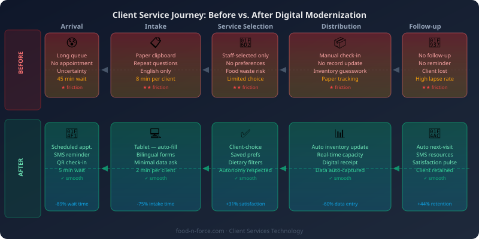

Every food bank has a theory of service. It is usually stated in terms of quantity — pounds distributed, families served, meals provided. But anyone who has spent time in a distribution line knows that the experience of receiving food assistance is as consequential as the food itself. A client who feels surveilled, judged, or forced to re-explain their situation to a different staff member each visit may not come back. The technology a food bank uses for client services either reinforces or undermines the dignity of that experience — and the choice is entirely within the organization's control.
The argument for better client-facing technology is not simply operational. It is a moral commitment to delivering services in a way that respects the autonomy, privacy, and time of the people being served.
The Problem with Paper-Heavy Intake

Paper intake forms carry a stigma that digital alternatives can significantly reduce. When a client walks into a pantry and is handed a clipboard with questions about income, household size, eligibility status, and address, they are entering a transactional relationship that communicates vulnerability before they have received anything. The form frequently asks for information the client has already provided on previous visits. Staff re-enter the same data by hand. Forms get lost, are illegible, or contain errors. At high-volume distributions, the intake line becomes the bottleneck that extends wait times and tests patience.
There is also a data problem. Paper intake that is not consistently digitized cannot support grant reporting, program evaluation, or service improvement. The hours clients spend filling out forms and staff spend processing them produce data that, because it is not captured systematically, generates almost no operational value.
Digital Intake Done Right
Digital intake does not mean replacing human contact with a screen — it means using technology to remove friction while preserving the human connection that distinguishes great service. A tablet at the front desk, loaded with a bilingual intake form that auto-populates returning clients' information, can reduce intake time from eight minutes to two while giving staff more time to make eye contact and ask how someone is doing.
The most thoughtful digital intake systems collect the minimum necessary data. Ask only what you use. If you do not analyze income data at the program level and it is not required for a specific grant, do not collect it. Minimizing data collection is not just good privacy practice — it signals respect to clients who are accustomed to over-reaching bureaucratic intake processes.
Bilingual and multilingual form support is not optional for most food banks — it is a baseline accessibility requirement. A form available only in English in a community with significant Spanish, Somali, or Vietnamese-speaking populations is a barrier that technology can remove inexpensively. Most digital form platforms support multiple languages natively.
Client Portals and Appointment Scheduling
Appointment-based pantry models — increasingly common as food banks shift to client-choice formats — depend on scheduling systems that clients can actually use. A portal that allows clients to book, reschedule, or cancel appointments without calling during staff hours removes a significant barrier for working families. SMS confirmation and reminder messages reduce no-shows without requiring client literacy in a particular digital platform.
Client portals can also give clients visibility into their own records: visit history, items previously selected, upcoming appointments. This transparency reinforces the sense that the pantry is a service, not a surveillance system. When clients understand what data is collected and see it working in their favor — pre-filled forms, remembered preferences — trust builds.
Using Client History for Personalized Service — Without Surveillance
When staff can see that a client has three young children and has consistently selected items from the baby food and cereal sections, they can proactively flag when a new shipment of relevant items arrives. When they know a client has dietary restrictions, they can guide them toward appropriate options. This kind of service personalization is what clients experience at every retail interaction — it should not be absent from food bank service.
The line between personalization and surveillance is real, and it is worth being explicit about. Collect service-relevant data (visit history, household composition, dietary needs). Do not collect or retain data that enables monitoring of clients' lives outside the pantry. Establish clear data retention policies and communicate them to clients in plain language. Technology that clients trust will be used well generates better outcomes than technology that provokes anxiety about how information might be used.
Serving Clients with Limited Digital Access
No digital system should create a new category of client who cannot be served. Some clients have smartphones but limited data plans. Others have inconsistent internet access, low digital literacy, or visual impairments that make standard interfaces difficult. Technology investments in client services must be paired with accessible alternatives: staff-assisted intake for clients who need it, voice-accessible interfaces, printed large-format materials for clients who prefer them.
Language accessibility extends beyond form translation. Staff who speak clients' languages, interpretation services for languages not represented by staff, and visual intake aids for clients with lower literacy are all dimensions of accessibility that technology should support, not replace. The goal is not to eliminate human service — it is to ensure that technology removes barriers rather than creating new ones.
The food bank that treats its client services technology as a values statement — not just an operational tool — will design systems that reflect the dignity of the people it serves. That commitment, expressed through every form, every wait, and every interaction, is ultimately what distinguishes service from charity.